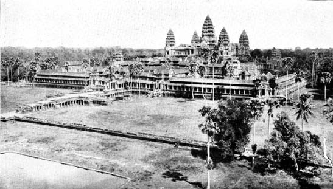
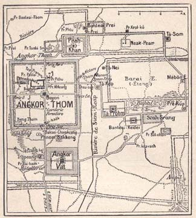
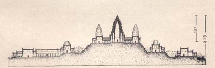
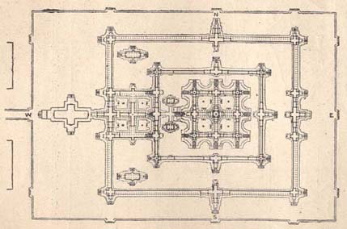
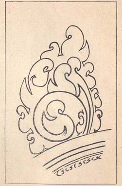
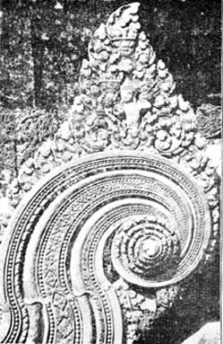
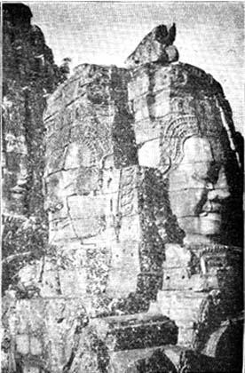
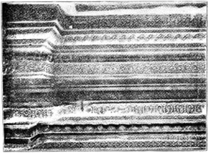
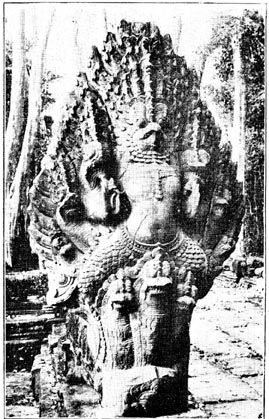

Hindu Architecture and Art in Angkor
By C. JINARAJADASA 1
II

The Vishnu Temple of Angkor Vat
The ruins of Angkor fall into two groups, first, and the principal, the great Vishnu Temple of Angkor Vat; and secondly, the ruins in the city of Angkor Thom near by, and various smaller temples dotted near the city within a radius of 15 miles. Fig. 1 gives a general idea where are the chief ruins. Angkor Vat stands near to the neighbouring town of Siem Reap, and is almost a square. A mile from the Temple is the old city of Angkor Thom, whose boundaries make a square. This is the last city, for evidences have been found that the first capital was not at this spot, but some distance away. In fact, it would seem that the capital was shifted to several places, but all fairly near to the present city.

Fig. 1. Plan of the Monuments
It is the Temple of Angkor Vat which is the most splendid of all the monuments. It is called a Vishnu Temple, but the sanctuary has four entrances facing the four quarters, so that there could scarcely have been an image in it. The word Angkor is said to be the Sanskrit Nagara, and Vat is said to be originally the Sanskrit Vata, an enclosure. It is impossible to give any adequate description of the impressive extent of Angkor Vat. The temple enclosure is surrounded by a great canal. This was the river near by diverted to make a water enclosure. The length of the enclosure from west to east is 4923 feet, and from north to south 4226 feet. The temple faces west and not east, as one would expect. The reason suggested is that this was inevitable, since the chief road to the city was from south to north and the entrance to the
temple had to abut on the road. It is this strange orientation of the temple which has suggested to some French scholars lately that perhaps the temple was not a temple for worship, but far more a monument to a king.
To enter the temple enclosure one crosses by a low stone bridge whose length is 720 feet and breadth about 150 feet. After crossing the bridge one comes to the first boundary wall of the temple; its length is 1716 feet and breadth 1386 feet. The enclosure is double that of Madura. (I should here mention that there are discrepancies in the measurements given in the two principal books, so that it would appear that no expert engineer has really taken the measurements accurately.) From the principal gate to the centre of the sanctuary the distance is almost half a mile. The first arched colonnade which is on all four sides is of immense size. On its walls are carvings which depict scenes from the Puranas, like the Churning of the Ocean, and well-known incidents from the Ramayana and the Mahabharata. The battle of the Pandavas and Kauravas is one of the chief incidents. The Devas have a head-dress which distinguishes them from the Asuras, and Devis and Apsarasas are similarly differentiated. The guide books give long explanations of these confused carvings.
Fig, 2 gives a section of the great monument. It is not on level ground but on what appears like a hill cut down to the necessary shape. Yet there is no hilly ground near by, and excavations in several parts of the monument have shown that the hill is an artificial erection made of blocks of laterite. The stone used is a hard grey sandstone; it is not granite. This has enabled the stone-carvers to achieve a perfection in carving which is not possible with granite.

Fig. 2. A Section of the Temple of Angkor Vat
As I have already mentioned, it is impossible to give a true description of Angkor Vat without at least 100 projections or photographs. One is overwhelmed by the architect’s conception of this immense temple, to whose construction he must have called hundreds of artists. The traveller rises from stage to stage, the first stage being 75 feet, and then the next stage 62 feet more. The top of the culminating tower is 213 feet above the ground level, and its general height can be judged from the fact that the height of the Gopuram at Madura is 152 feet. The Cathedral of Notre Dame at Paris has about the same height as Angkor Vat. Both were built at about the same period. To ascend to the sanctuary is a serious task, as the staircase is the steepest I have known of any temple in India, and one has to come down it sideways because of the great inclination. It is noteworthy that the central tower has four minor towers as supports, somewhat resembling the conception of the Taj where the central tomb has four minarets at the four corners. On the first level, as also at a higher level, there are two small buildings which will be noted in the ground plan of the temple (Fig. 3). These are called libraries, though of course no one now knows what was their proper use.

Fig. 3. Ground Plan of the Temple of Angkor Vat
In all the carvings at Angkor, and in the monuments near by at their best period, there is a theme which is very significant. It is represented by Fig. 4. Again and again this is worked out in very beautiful forms. We find it also In Fig. 5, which reproduces a Devi. On the right side is a very beautiful panel in sandstone. One characteristic of all the work at Angkor Vat is a beautiful fineness and finish which one rarely finds in Indian temples built of granite.
|
 |
 |
|
Fig. 4. Denticule, representing the decorative theme in Khmer Art |
Fig. 5. Decorative theme: A Devi |
The city of Angkor Thom is a square, and has four gates to the cardinal points, with an additional gate which was the gate through which the dead were taken out. The moment one comes to Angkor Thom, one is impressed by a new idea in architecture, and that is the enormous faces which are over the four gateways, and specially which are over all the cupolas of the temple at the centre of the city, which is called Bayon. These faces are huge, some 9 feet high, as those over the gate. The others in the cupolas of Bayon vary from 5 feet to 7.5 feet (Fig, 6). In this temple there are 160 of these faces in groups of four making each cupola. These enormous faces have a curiously hypnotising effect by their repetition, and some tourists find them a little bit frightening, even though the temple is now in ruins. Archaeologists say that originally Angkor Thom was dedicated to the cult of Avalokiteshwara, and that soon afterwards, when the Hindu kings once again reigned, the faces were ascribed to Shiva.

Fig. 6. Temple of Bayon, City of Angkor Thom. Heads decorating Cupolas
Another new idea is at the City gate. On either side of the gate is an enormous Naga, with a highly decorative head carved in stone. This Naga is held up by a large number of giants, and the length of the snake must be nearly 100 feet. For many years the French experts considered that Angkor Thom was earlier in structure than Angkor Vat, but during the last three years it is now settled that Angkor Vat is the earlier structure. This is borne out by the fact that at Angkor Thom the sculptural work is rather hurried, and lacks the fine artistic ensemble which impresses one at Angkor Vat.
|
 |
 |
|
Fig. 7. Basement of the Temple of Khleang |
Fig. 8. Garuda |
When Indian scholars some day will visit Angkor and begin to decipher the inscriptions and make a careful study of the monuments and the sculptures, they will be able, with the knowledge of what exists in India, to write a series of descriptions which will be different from the French manuals on Angkor. One could well spend two weeks at Angkor looking carefully at all the monuments, but the traveller has usually little time.
As I have said in the beginning, one comes away with a profound impression which is summed up in the words, "What do they know of India who only India know?"
I add in conclusion a little summary concerning the way to reach Angkor. There are two routes to Angkor. The more convenient one for travelers who cannot speak French is through Bangkok in Siam. From Bangkok there is a train to the border town of Aranha. The railway line ends there, and the Province of French Cambodia begins. Angkor is 100 miles from Aranha, and the travel agencies arrange for motor cars, with guides who are Indians and speak English, French and the vernaculars. The second route is from Saigon. Everything in the city is French and there is scarcely anyone who speaks English. There is no railway line to Angkor but there are good roads. The distance is 292 miles, and the trip takes the whole day, with the necessary stoppages. A motor bus starts early in the morning, and is usually crowded. It arrives at Angkor between 6 and 7. Private motor cars can be engaged and do not take much less time, though more comfortable.
The hotel accommodation is excellent. Nearest to the ruins is a small hotel operated by the administration. Two miles away, at the town of Siem Reap, is a large Grand Hotel for Cook’s tourists and others who travel at that rate. There is also a smaller but quite excellent hotel under French management and less expensive. There are in addition Chinese sleeping houses, where the visitors sleep on big raised chowkis, about ten on a chowki. My Annamite friends assured me that they had all the comforts which they needed.
The best guide books are in French, but probably Cook at Bangkok issues something sufficient as a simple guide book. In French there are two works: (1) Vers Angkor (Paris, Hachette); (2) a fuller and more authoritative manual is Guide Archeologique aux Temples d’ Angkor by H. Marchal, Conservator of the Angkor Group (Paris).
A small work which gives in brief the history of Champa is that of Professor Phanindra Nath Bose, published in 1927 by The Theosophical Publishing House, Adyar, Madras. This work consists of a series of articles written evidently for magazines. It is to be desired that Professor Bose would rewrite the material, and put it all into one coherent story, without the continual reiteration of incidents now characteristic of his book.
Two well-documented chapters on Cambodia and Champa are found in the third volume of Sir Charles Eliot’s scholarly work, Hinduism and Buddhism. He has visited Angkor, and studied the history of the period according to the French scholars. Eliot’s two chapters are so far the best in English.
1
The first part of the article appeared in Triveni for April, 1937.